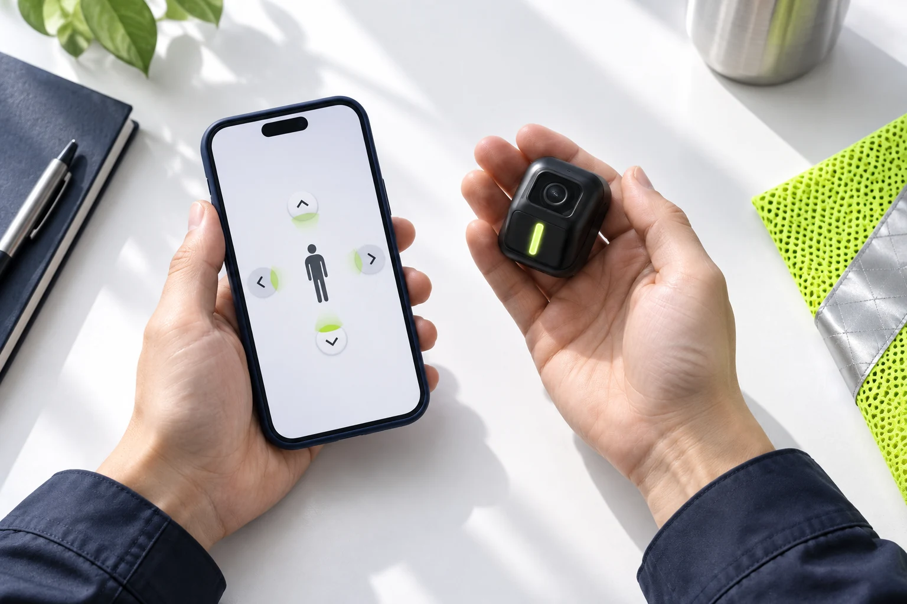

QUESTIONS, ANSWERED
세이플라이어에 대해
궁금하신가요?
제품의 원리와 도입 조건, 현재 개발 단계를 확인하세요.
QUESTIONS, ANSWERED
궁금한 점을
확인하세요.
01기존 CCTV 기반 안전 시스템과 무엇이 다른가요?
별도의 CCTV나 관제 서버 없이 작업자가 착용한 센서와 스마트폰 AI를 이용해 위험을 감지하고 작업자에게 직접 경고하도록 개발하고 있습니다.
02기존 공장에도 적용할 수 있나요?
대규모 관제 인프라나 차량별 장치 설치 없이 사용할 수 있도록 개발하고 있습니다. 구체적인 착용 구조와 현장 적용 조건은 실증을 통해 확인할 예정입니다.
03어떤 위험을 감지하나요?
지게차·트럭·굴착기 등 이동장비가 작업자에게 접근하는 상황을 감지하고 충돌 위험 여부를 판단하도록 개발하고 있습니다.
04지금 제품을 구매하거나 도입할 수 있나요?
현재 시제품/MVP 개발 중입니다. 투자·제휴와 PoC·현장 실증에 관한 문의를 받고 있습니다. 소개된 구성과 가격은 기획안으로, 최종 사양과 공급 조건은 확정 전입니다.

TAKE A CLOSER LOOK
구성부터 작동 원리까지,
더 자세히 살펴보세요.
조끼의 센서에서 스마트폰 AI, 작업자에게 직접 닿는 경고까지. 감지·판단·경고가 이어지는 과정을 소개합니다.
솔루션·기술 보기LET’S MAKE WORK SAFER
찾으시는 답이
아직 없으신가요?
대표 이메일과 문의 폼으로 편하게 남겨주세요.